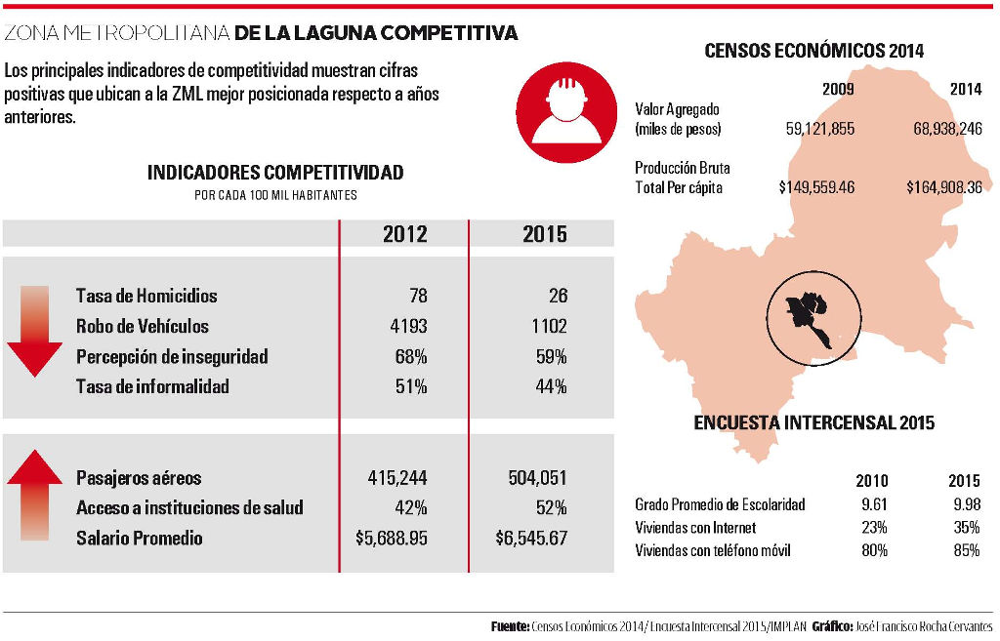

En 2007, año de la primer medición del Instituto Mexicano para la Competitividad (IMCO) sobre competitividad de las ciudades mexicanas, la Zona Metropolitana de La Laguna (ZML) ocupaba el puesto 12 de más de 70 metrópolis. Se consideraron factores económicos, de infraestructura, institucionales, sociales y ambientales.
Estas altas calificaciones como ciudad, en la competencia global por ofrecer un entorno propicio para el desarrollo económico, eran compartidas por el Centro de Investigación y Docencia Económica (CIDE) pionero en la investigación académica sobre el tema en nuestro país, quien aquel año ubicó a Torreón y su metrópoli en el lugar 17.
A partir de ese momento algunas de las condiciones que influyen en la capacidad de una ciudad para atraer y retener inversiones y talentos, fueron jalando a nuestra región a una espiral de pérdida de confianza del capital económico y humano que genera el desarrollo de la región.
La crisis de seguridad, el desordenado crecimiento urbano que mermó los servicios públicos, la falta de una planeación a largo plazo y con visión metropolitana, la desvinculación de los actores económicos, políticos y sociales, llevaron a que de acuerdo al IMCO en 2014 nuestra ciudad se situara en el lugar 48 del ranking nacional.
Indicadores considerados en esa medición con datos de 2012, mostraron en el recién concluido 2015 una realidad distinta para la ZML: La tasa de homicidio disminuyó de 78 homicidios por cada 100 mil habitantes en 2012 a solo 26, con información hasta Noviembre de 2015.
En cuanto a robo de vehículos, de los 4,193 registrados en 2012 por IMCO se redujeron a 1,102 robos de vehículos en la ZML y en Torreón solo 500, en contraste con 2,609 registrados en 2012.
La percepción de inseguridad en los municipios, medida por la encuesta Nacional de INEGI ha bajado de 68.8 en 2012 a 59.7 en 2015. Los pasajeros aéreos que registró Torreón en 2012 fueron 415 mil, mientras a Noviembre de 2015 ya se registraban 504 mil.
El acceso a instituciones de salud ha subido de 42 a 52 % de acuerdo a la Encuesta Nacional de Ocupación y Empleo.
Según los resultados de los censos económicos 2014, publicados el 27 de julio, el valor agregado en el municipio de Torreón aumentó 5.62% real en cinco años.
Estas tendencias se suman al crecimiento del mercado hipotecario en más de 6% anual, la calificación del Financial Times que ubica a Torreón como la ciudad con mejor costo beneficio al invertir en México, la constante baja en el índice de informalidad y el aumento del salario promedio de los últimos dos años.
Además, la encuesta intercensal del INEGI muestra avances en educación y acceso a bienes en las viviendas.
Todos los anteriores son indicadores que forman parte de los 90 componentes de la competitividad urbana de acuerdo al IMCO, en todos ellos el 2015 nos entrega muestras de avance y de recuperación de nuestra ciudad en el entorno global.
Enrique Cabrero, ex Director del CIDE y actual Director de CONACYT, señaló hace una década que la competitividad entre ciudades sólo puede impulsarse por medio de la cooperación al interior de ellas.
Para ello las experiencias internacionales privilegian la planeación estratégica para el fomento a la competitividad, como muestran Barcelona, Bogotá o Aguascalientes.
La construcción de las ciudades es una acción público privada, participan gobiernos, pero también de forma muy importante, empresas, asociaciones y los múltiples agentes que en ella intervienen.
Por ello la generación de las condiciones para la prosperidad social y el desarrollo económico requieren la cooperación de los sectores. La competitividad de las ciudades crece con la conformación de clústers y alianzas en base a objetivos comunes.
Las ciudades que formulan estrategias para ser más competitivas construyen instituciones y redes mediadoras de la cooperación, y lo logran cuando cuentan con una sólida vinculación entre universidad y empresa.
Por ello si en 2015 Torreón y La Laguna dieron pasos importantes hacia posicionarse nuevamente en el mapa de las ciudades competitivas, en 2016 corresponderá afianzar estas tendencias con la cooperación metropolitana de empresas, ciudadanos e instituciones.
Infografía
